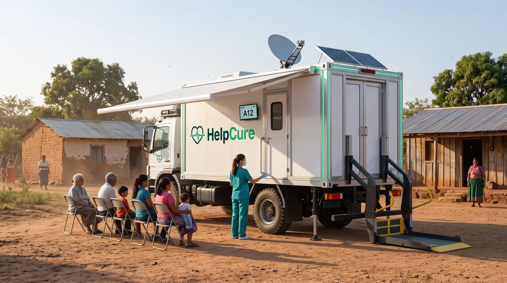
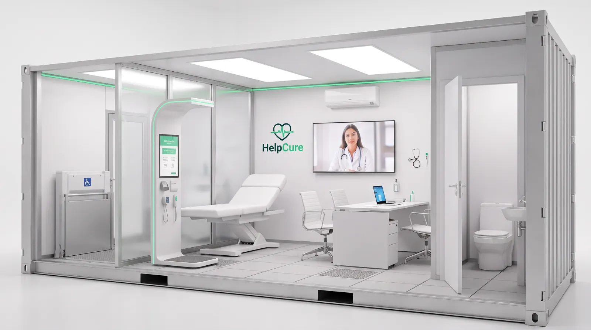
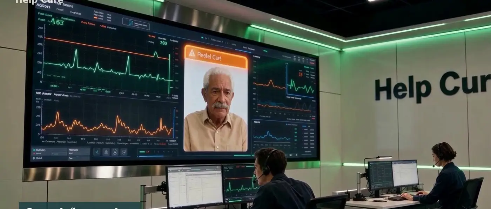

O cuidado que acompanha você — também para quem mais precisa.
Uma campanha para levar unidades móveis com atendimento gratuito a comunidades carentes do Paraguai e do Brasil, e concluir o desenvolvimento da plataforma Help Cure.
Campanha em preparação: cadastre-se para ser avisado no lançamento.
Cada contribuição gera cuidado hoje e uma plataforma melhor amanhã.

Atendimento gratuito
Unidades móveis com triagem e teleconsulta visitam comunidades sem acesso à saúde. Cada pessoa atendida segue acompanhada à distância depois da visita.

Desenvolvimento da plataforma
O atendimento real mostra o que funciona. Esses resultados aceleram o motor RAPP, o app do paciente e a central de monitoramento.
A unidade móvel, a célula e o Help Cure Casa.
Unidade móvel em contêiner de 20 pés
Um caminhão leva a célula de atendimento completa: triagem com totem, consultório com teleconsulta, vidro inteligente, banheiro químico, energia solar e Starlink. Abre o toldo, baixa a plataforma para cadeira de rodas e atende ali mesmo.
Célula de atendimento
Nove metros quadrados, desmontáveis, com triagem completa e médico na tela. Instalada em hospitais, farmácias, serviços públicos, indústrias, academias, igrejas e universidades.
Help Cure Casa
Fica na sala de quem você ama e recebe as medições do relógio, do anel e da pulseira. Lembra os remédios por voz e luz, tem botão de emergência e avisa a família e a equipe Help Cure quando algo muda.
Metas por etapa: cada valor já vira um resultado visível.
Escolha como apoiar.
Valores de referência, que podem ser ajustados no lançamento. O monitoramento gratuito vale por 12 meses e segue os termos de uso e o consentimento do paciente.
Apoiador
Seu nome no mural de apoiadores e o relatório de impacto.
Padrinho
Tudo do Apoiador e você apadrinha um atendimento na unidade móvel.
Conectado
Smartwatch Help Cure para usar com o app no seu celular: leituras básicas e avisos de saúde, com 12 meses de monitoramento.
Guardião
Kit Help Cure Casa com o aparelho da sala e o smartwatch, e 12 meses de monitoramento gratuito.
Guardião Solidário
Um kit para você e outro doado a uma família atendida pela campanha.
Para empresas e instituições
Patrocine uma célula
Uma célula de atendimento de vidro instalada no local que sua empresa escolher — escola, igreja, comunidade, fábrica — com a sua marca e relatório de impacto.
Patrocine uma unidade móvel
O caminhão com a célula em contêiner e 6 meses de operação levando atendimento gratuito a comunidades escolhidas, com a sua marca na unidade.
Andamento dos patrocínios
Cada célula e cada unidade móvel tem seu próprio marcador. Quando uma chega a 100%, ela é instalada e abrimos a próxima.
Quer investir no Help Cure?
Investimento não faz parte desta campanha. As doações vão para a Fundação e não dão participação na empresa. Investidores têm uma área própria, com apresentações e contato direto.
Você acompanha cada doação e cada atendimento.
Fundação Help Cure
Entidade sem fins lucrativos no Paraguai que recebe as doações e opera as unidades móveis, com prestação de contas semestral.
Painel público
Nesta página: valor arrecadado, gasto por destino e número de atendimentos, atualizados todo mês.
Cuidado com as pessoas
Médico responsável em cada país, consentimento informado e proteção de dados. Ninguém é atendido sem saber como seus dados são usados.
Patrocine uma célula ou uma unidade móvel.
Indústrias, cooperativas, laboratórios, farmácias, igrejas e universidades podem levar a unidade a uma comunidade escolhida, com a marca na unidade e um relatório de impacto próprio.

Cadastre-se e seja avisado no lançamento.
Ainda não recebemos pagamentos. Assim que a fundação e a plataforma de doação estiverem prontas, você recebe o link e os valores de cada nível.
Antes de apoiar.
Isto é um investimento?
Não. É uma doação com recompensas. Ela não dá participação na empresa, lucro ou retorno financeiro. Investidores têm uma área própria.
Haverá um token Help Cure?
Numa segunda fase, a recompensa poderá ser emitida como token digital. Ele servirá apenas para registrar o apoio e liberar recompensas, sem promessa de valorização.
Quem recebe o dinheiro?
As doações vão para a Fundação Help Cure, que opera as unidades móveis. A tecnologia é fornecida pela empresa Help Cure por contrato, com contas separadas.
Como escolhem as comunidades?
Em parceria com a rede pública local e organizações da comunidade, priorizando quem tem menos acesso à saúde.